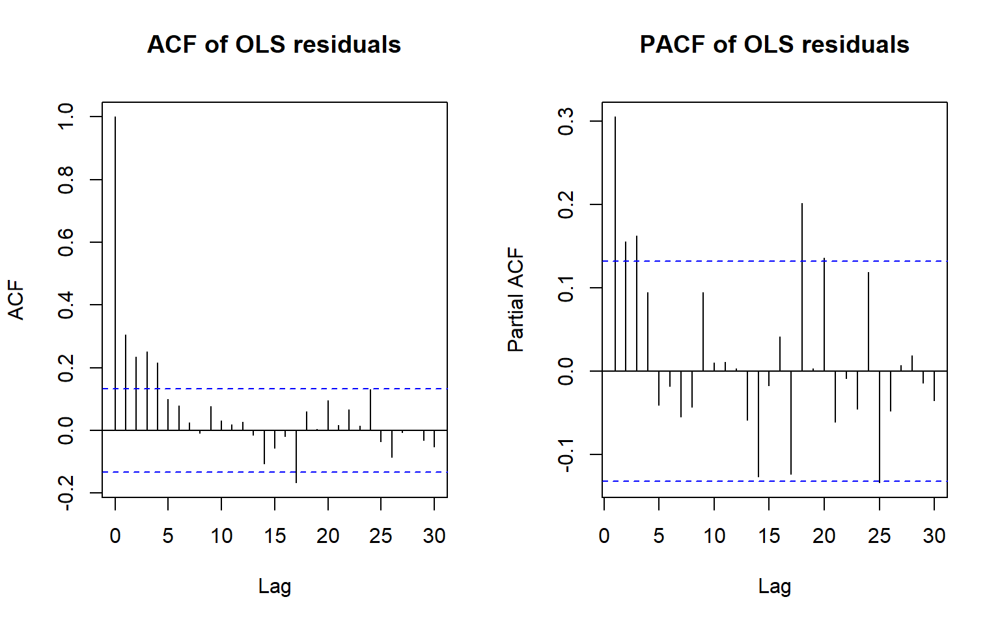
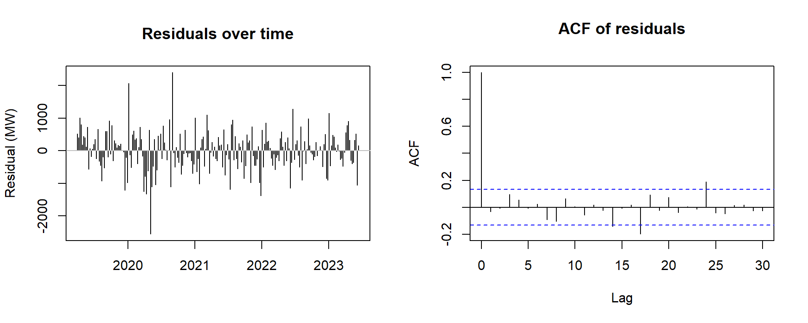

11Project 3: Explaining and forecasting Eskom weekly peak demand with time series regression
11.1 Summary
Explaining and forecasting weekly peak electricity demand with time series regression (Part 2, time series regression; implementation project; covers real-world data, model comparison and computational / statistical programming).
This project asks which factors explain the weekly peak of South African electricity demand, and whether allowing for autocorrelated errors changes which factors matter, how precisely they are estimated, and how well the model forecasts. We used the weekly maximum of RSA Contracted Demand (MW) from Eskom’s hourly system data, 1 April 2019 to 4 September 2023 (232 complete weeks), together with Eskom’s planned, unplanned and other outages, a public-holiday calendar, a lockdown dummy and weekly temperatures for Johannesburg, Pretoria and Durban from the Open-Meteo archive. All modelling choices were made on the first 220 weeks, and the last 12 weeks were kept for testing.
The residuals of the ordinary regression are strongly autocorrelated (Ljung–Box \(p \approx 10^{-8}\)), so we compared error models and chose ARMA(1,1) errors, which have the lowest AIC and BIC. The final model’s residuals pass the Ljung–Box test (\(p = 0.075\)). We then chose the regressors by forward selection on AIC under those errors. The selected model has one annual harmonic pair, the lockdown, a year-end shutdown indicator, the number of public holidays, planned outages and a quadratic in temperature. Selecting the regressors with ordinary least squares instead would also have added unplanned and other outages, which the error model shows are not needed. We estimated the model by maximum likelihood, by my own conditional sum of squares with optim() and by generalised least squares, and the estimates agree closely.
Demand is about 3,600 MW lower in the lockdown weeks, about 1,900 MW lower in the year-end shutdown, and about 260 MW lower for each public holiday in the week. Every 1,000 MW of planned outages goes with about 170 MW less peak demand. Temperature has a strong effect on the cold side: a week at 16 degrees (Celsius) has a peak about 2,300 MW higher than a week at 27 degrees, while a GAM check shows no clear increase in hot weeks. Allowing for autocorrelated errors widened the standard errors of the slowly varying terms (the seasonal cycle and the lockdown) and narrowed those of the terms that change week to week (holidays, temperature, year-end). The ARMA errors did not improve the forecasts. On the 12 test weeks the regression with independent errors has an RMSE of 875 MW, and over 11 rolling 12-week windows it has the lowest average error of my models (574 MW), well ahead of the seasonal naive model (1,037 MW) and a seasonal ARIMA model of the Project 1 type (1,116 MW).
If we were to do this again we would use measured station temperatures instead of reanalysis, forecast the outages and temperature instead of using their actual values, and test a daily model with day-of-week effects. A full detailed analysis follows below.
11.2 Data and EDA
11.2.1 Downloading and checking the data
The hourly data come from Eskom’s system data file, ESK6816.csv, which covers 1 April 2019 to 13 September 2023. We first checked that every day is complete, because a gap in a time series breaks lags, seasonality and the ACF. Table 11.1 below shows the check.
Code
library(tidyverse)library(lubridate)library(here)library(forecast)library(nlme)library(jsonlite)file_path <-here("data", "ESK6816.csv")if (!file.exists(file_path)) {stop("ESK6816.csv is not in the data folder. Download it from Amathuba (see Code and data).")}data <-read.csv(file_path) |>mutate(Date =as_date(ymd_hm(Date.Time.Hour.Beginning, tz ="Africa/Johannesburg"))) |> dplyr::select(Date, RSA.Contracted.Demand, RSA.Contracted.Forecast, Total.UCLF, Total.PCLF, Total.OCLF) |>filter(!is.na(RSA.Contracted.Demand))daily <- data |>group_by(Date) |>summarise(peak =max(RSA.Contracted.Demand),hours =n(),.groups ="drop")weekly_all <- data |>mutate(Week =floor_date(Date, "week", week_start =1)) |>group_by(Week) |>summarise(peak =max(RSA.Contracted.Demand),esk_fc =max(RSA.Contracted.Forecast),uclf =mean(Total.UCLF, na.rm =TRUE),pclf =mean(Total.PCLF, na.rm =TRUE),oclf =mean(Total.OCLF, na.rm =TRUE),days =n_distinct(Date),.groups ="drop")weekly <- weekly_all |>filter(days ==7)
Table 11.1: Completeness check of the daily series: first and last day, number of days, days with fewer than 24 hourly records, and the number of partial weeks dropped.
first_day
last_day
days
short_days
partial_weeks_dropped
2019-04-01
2023-09-13
1627
0
1
The series has 1,627 consecutive days, each with 24 hourly records, so no day needed to be dropped or filled. The last partial week (three days, starting 11 September 2023) was dropped, so every weekly maximum uses seven days. This leaves 232 weeks.
11.2.2 Choosing the time scale
The target is the weekly maximum of hourly demand. We chose the week over the day for two reasons. A weekly series is less noisy, so the annual, outage and temperature patterns are easier to see, and it matches the weekly target of Project 1, so the two projects use the same series. We used the maximum rather than the total because the peak is what the system has to be able to supply in its worst hour. Figure 11.1 below shows what the weekly scale loses compared to a daily scale.
Figure 11.1: Daily peak RSA contracted demand (MW) for the first 10 weeks of 2021. Weekend days are clearly lower, so a daily model would need day-of-week terms.
The weekend dips in Figure 11.1 are a day-of-week pattern that a daily model would need its own terms for. Taking the weekly maximum removes it, because the maximum almost always falls on a weekday. This project is only concerned with maximum hourly demand per week.
11.2.3 Weather data
Electricity demand depends on the weather, and the Eskom file has no weather variables. We downloaded daily maximum temperatures for Johannesburg, Pretoria and Durban, the three largest load centres, from the Open-Meteo historical archive. These are modelled reanalysis values, not station measurements. We averaged the three cities each day and then took the weekly mean. The results are saved so it was only downloaded once and the analysis does not change if the archive is updated.
Figure 11.2: Weekly peak RSA contracted demand, weekly average planned (PCLF) and unplanned (UCLF) outages (all MW), and weekly mean of the daily maximum temperature in Johannesburg, Pretoria and Durban (degrees), April 2019 to September 2023.
Demand has a clear annual cycle, peaking in the southern winter and dipping sharply at the turn of each year. It also falls in April 2020, during the hard lockdown of COVID-19. Temperature moves almost exactly opposite to demand, which suggests that cold weather drives the winter peak. Planned outages are also high when demand is low, which fits maintenance being scheduled for quieter periods. Unplanned outages trend upwards over the whole period while demand does not, so they look unlikely to explain much.
11.3 Building the regression
11.3.1 Candidate regressors
we chose all candidates before looking at the test weeks, and every choice in this section uses only the first 220 weeks. Thermal generation, imports and exports and Eskom’s own demand forecast were not considered as regressors, as generation and trade respond to demand rather than drive it, and the forecast would make the regression circular. The candidates are as follows:
Annual harmonics:\(s_{k,t} = \sin(2\pi k t / 52.18)\) and \(c_{k,t} = \cos(2\pi k t / 52.18)\), where \(t\) counts weeks and 52.18 = 365.25/7 is the length of a year in weeks.
Lockdown: 1 for the weeks starting 30 March to 27 April 2020 (the hard lockdown), 0 otherwise.
Year-end: 1 for weeks starting between 22 December and 6 January, when much of industry shuts down.
Public holidays: the number of public holidays in the week. The dates were typed in from the official calendar.
Outages: the weekly averages of planned (PCLF), unplanned (UCLF) and other (OCLF) outages.
Temperature: the weekly temperature and its square, so that demand can rise for both cold and hot weeks.
Table 11.2 confirms that the lockdown dummy is used only in 2020. It is a temporary intervention, which is not the same as a structural break, so it cannot describe a lasting change in demand.
The training weeks contain 9 year-end weeks and 46 weeks with at least one public holiday. Their temperatures range from 16.0 degrees to 29.7 degrees. Table 11.3 shows how each candidate relates to demand on the training weeks, both in levels and after first differencing. Differencing removes most of the shared seasonal pattern, so the differenced column shows whether the week-to-week movements agree.
Table 11.3: Correlation of each candidate regressor with weekly peak demand on the training weeks, in levels and after first differencing.
variable
cor_level
cor_diff
pclf
-0.66
-0.39
uclf
-0.06
0.14
oclf
-0.13
0.06
hol_count
-0.24
-0.17
temp3
-0.61
-0.28
Planned outages (−0.66) and temperature (−0.61) have the strongest relationships, and both stay negative after differencing, so they move with demand week to week as well as over the seasons. Temperature is also strongly correlated with the first harmonic (r ≈ −0.80), so part of what it explains overlaps with the seasonal cycle. Unplanned and other outages are only weakly related to demand. The holiday count has a modest negative correlation. Correlations look at one variable at a time, so the regressors are compared jointly below.
11.3.2 Do the errors need a model?
Before choosing the regressors, we checked whether the regression errors are independent. If they are not, the OLS standard errors and AIC values are too optimistic, and an AIC-based choice of regressors tends to keep terms that only fit the autocorrelated noise. We fitted OLS with every candidate and looked at the residuals in Figure 11.3 below.
Code
ols_all <-lm(reformulate(all_vars, "peak"), data = train)par(mfrow =c(1, 2))acf(resid(ols_all), lag.max =30, main ="ACF of OLS residuals")pacf(resid(ols_all), lag.max =30, main ="PACF of OLS residuals")par(mfrow =c(1, 1))

Figure 11.3: Sample ACF and PACF of the residuals from the OLS regression with all candidate regressors, training weeks, up to lag 30.
The ACF in Figure 11.3 above decays slowly, from 0.31 at lag 1 to about 0.22 at lag 4, and the PACF has significant spikes at lags 1 to 3 (0.31, 0.16 and 0.16). A slowly decaying ACF with a PACF that does not cut off cleanly points to an ARMA model rather than a simple low-order AR. Table 11.4 below compares the possible error models for the same regressors, using AIC, BIC, and a Ljung-Box test.
Code
orders <-list(c(0, 0, 0), c(1, 0, 0), c(2, 0, 0), c(1, 0, 1), c(2, 0, 1), c(1, 0, 2))err_tab <-data.frame()for (o in orders) { fa <-Arima(train$peak, order = o, xreg =as.matrix(train[, all_vars])) err_tab <-rbind(err_tab,data.frame(errors =paste0("ARMA(", o[1], ",", o[3], ")"),AIC =AIC(fa),BIC =BIC(fa),LB_p =Box.test(resid(fa), lag =20, type ="Ljung-Box",fitdf = o[1] + o[3])$p.value))}err_tab |>mutate(across(c(AIC, BIC), ~round(.x, 1)),LB_p =signif(LB_p, 2))
Table 11.4: AIC, BIC and Ljung–Box p-value (20 lags) of the regression with all candidate regressors under different error models, training weeks. ARMA(0,0) is the regression with independent errors.
errors
AIC
BIC
LB_p
ARMA(0,0)
3512.0
3552.7
0.0000
ARMA(1,0)
3483.9
3528.0
0.0016
ARMA(2,0)
3472.4
3519.9
0.0150
ARMA(1,1)
3463.8
3511.3
0.0840
ARMA(2,1)
3465.1
3516.0
0.0850
ARMA(1,2)
3464.7
3515.6
0.1000
Independent errors, the ARMA(0,0), are clearly rejected (\(p \approx 10^{-8}\)). AR(1) errors remove most of the autocorrelation but still fail the Ljung–Box test (\(p = 0.002\)), and AR(2) fails as well (\(p = 0.015\)). ARMA(1,1) has the lowest AIC (3,463.8) and the lowest BIC (3,511.3) and passes the test (\(p = 0.084\)). The two larger models do not improve on it. We therefore used the ARMA(1,1) errors,
where \(x_t\) holds the regressors and \(u_t\) is the regression error.
11.3.3 Choosing the regressors
We then chose the regressors by forward selection on AIC, starting from the annual cycle and the lockdown. At each step we added the candidate that lowered the AIC the most, and stopped when no candidate lowered it further. Every model in this search has ARMA(1,1) errors. Table 11.5 shows the path and which variable that was added at each step, and the resulting AIC.
Code
cur <-c("s1", "c1", "lockdown")left <- candspath_arma <-data.frame(step =0, added ="start: s1, c1, lockdown",AIC =AIC(Arima(train$peak, order =c(1, 0, 1), xreg =as.matrix(train[, cur]))))repeat { aics <-c()for (v in left) { aics[v] <-AIC(Arima(train$peak, order =c(1, 0, 1), xreg =as.matrix(train[, c(cur, v)]))) }if (min(aics) >=tail(path_arma$AIC, 1)) break best_v <-names(which.min(aics)) cur <-c(cur, best_v) left <-setdiff(left, best_v) path_arma <-rbind(path_arma, data.frame(step =nrow(path_arma), added = best_v, AIC =min(aics)))if (length(left) ==0) break}final_vars <- curpath_arma |>mutate(AIC =round(AIC, 1))
Table 11.5: Forward selection of regressors by AIC with ARMA(1,1) errors, training weeks. Each row adds the candidate that lowers the AIC the most.
step
added
AIC
0
start: s1, c1, lockdown
3561.9
1
yearend
3522.0
2
pclf
3500.5
3
temp3
3485.4
4
temp_sq
3467.5
5
hol_count
3460.2
The year-end indicator gives the largest drop (from 3,561.9 to 3,522.0), followed by planned outages, temperature, the squared temperature and the holiday count, which ends at an AIC of 3,460.2. Unplanned and other outages do not lower the AIC once these are included, so neither is selected. We expected unplanned outages to be a useful proxy for load-shedding, but they do not explain peak demand once the season, calendar, planned outages and temperature are known.
To see what the error model changes, we repeated the same search with independent errors in Table 11.6.
Table 11.6: Forward selection of regressors by AIC with independent errors (OLS), training weeks, for comparison with the ARMA(1,1) search.
step
added
AIC
0
start: s1, c1, lockdown
3626.4
1
yearend
3577.7
2
pclf
3547.4
3
oclf
3536.8
4
hol_count
3532.7
5
temp3
3527.5
6
temp_sq
3512.8
7
uclf
3512.0
With independent errors the search keeps going and adds every candidate, including other outages and unplanned outages, the last with a gain of only 0.8. The two searches agree on the main terms but not on the weak ones. This is the why we should not ignore autocorrelation, as positively correlated errors make each extra term look more useful than it is, so the OLS search keeps terms that the ARMA search rejects.
11.3.4 Checking the choices
The error model was chosen with all candidates in the model, and the harmonic order was fixed at one pair. In Table 11.7 below we check both choices again with the selected regressors.
Code
confirm <-data.frame()for (o inlist(c(1, 0, 0), c(2, 0, 0), c(1, 0, 1), c(2, 0, 1), c(1, 0, 2))) { fa <-Arima(train$peak, order = o, xreg =as.matrix(train[, final_vars])) confirm <-rbind(confirm, data.frame(check ="error model",specification =paste0("ARMA(", o[1], ",", o[3], ")"),AIC =AIC(fa), BIC =BIC(fa)))}for (k in1:3) { h <-fourier(ts(train$peak, frequency = period), K = k) X_k <-cbind(h, as.matrix(train[, setdiff(final_vars, c("s1", "c1"))])) fa <-Arima(train$peak, order =c(1, 0, 1), xreg = X_k) confirm <-rbind(confirm, data.frame(check ="harmonic pairs",specification =paste0("K = ", k),AIC =AIC(fa), BIC =BIC(fa)))}confirm |>mutate(across(c(AIC, BIC), ~round(.x, 1)))
Table 11.7: AIC and BIC of the selected regression under different error models (with one harmonic pair) and with K = 1 to 3 harmonic pairs (with ARMA(1,1) errors), training weeks.
check
specification
AIC
BIC
error model
ARMA(1,0)
3483.5
3520.9
error model
ARMA(2,0)
3468.6
3509.3
error model
ARMA(1,1)
3460.2
3501.0
error model
ARMA(2,1)
3461.5
3505.6
error model
ARMA(1,2)
3461.0
3505.1
harmonic pairs
K = 1
3460.2
3501.0
harmonic pairs
K = 2
3460.1
3507.6
harmonic pairs
K = 3
3462.6
3516.9
ARMA(1,1) still has the lowest AIC and BIC with the selected regressors. One and two harmonic pairs give the same AIC (3,460.2 and 3,460.1), but two pairs cost an extra two parameters and BIC prefers one pair, so we only add one harmonic pair to the model. A single sine and cosine pair is enough because temperature, the year-end indicator and the holidays describe the sharper parts of the seasonal pattern.
11.4 Final model
The final regression is fitted to the training weeks by maximum likelihood with ARMA(1,1) errors. Table 11.8 compares its estimates with the same regression fitted by OLS, which assumes independent errors.
Table 11.8: Estimates and standard errors of the final regression with independent errors (OLS) and with ARMA(1,1) errors (maximum likelihood), training weeks.
term
ols_est
ols_se
arma_est
arma_se
(Intercept)
42235.042
2833.443
46451.424
2482.819
s1
1352.729
129.206
1069.248
194.339
c1
-192.061
72.358
-192.395
165.041
lockdown
-4534.282
353.995
-3608.202
415.186
yearend
-2093.335
270.204
-1875.178
228.043
pclf
-0.186
0.044
-0.172
0.049
temp3
-817.646
245.326
-1100.786
210.199
temp_sq
16.375
5.202
20.668
4.391
hol_count
-223.632
110.343
-258.079
83.783
ar1 (phi)
NA
NA
0.896
0.043
ma1 (theta)
NA
NA
-0.560
0.078
With the ARMA(1,1) estimates from Table 11.8, the fitted model is
where \(L_t\) is the lockdown dummy, \(Y_t\) the year-end indicator, \(H_t\) the number of public holidays, \(P_t\) planned outages (MW) and \(T_t\) temperature (degrees).
The coefficients read as follows, holding the other terms fixed.
Lockdown: the peak was about 3,600 MW lower in the five hard-lockdown weeks.
Year-end: the peak is about 1,900 MW lower in the shutdown weeks.
Holidays: each public holiday in a week lowers the weekly peak by about 260 MW.
Planned outages: each extra 1,000 MW of planned outages goes with about 170 MW less peak demand. This is an association rather than a causal effect, because maintenance is scheduled for weeks when demand is expected to be low.
Annual cycle: the sine and cosine terms give an annual swing of about \(\sqrt{1069^2 + 192^2} \approx 1{,}090\) MW on top of the temperature effect.
The intercept is large because it is the value at 0 degrees, far outside the data, so it has no direct meaning. The error terms show that a demand shock decays slowly (\(\hat\phi = 0.90\)), but about half of each new shock is cancelled in the following week (\(\hat\theta = -0.56\)).
Temperature enters as a curve, so its effect is easier to read from a plot. Figure 11.4 shows the effect of temperature relative to its minimum.
Figure 11.4: Estimated effect of weekly temperature on weekly peak demand from the final model with ARMA(1,1) errors, relative to the temperature with the lowest demand. The ticks along the bottom are the temperatures of the training weeks.
Demand is lowest at about 26.6 degrees. A week averaging 20 degrees has a peak about 900 MW higher, and a week averaging 16 degrees, the coldest in the data, about 2,300 MW higher.
11.4.1 Checking the temperature curve with a GAM
The slides fit electricity demand with a generalised additive model (GAM) with correlated errors, where each effect can be a smooth curve estimated from the data. We refitted the final model with a smooth function of temperature, \(f(T_t)\), in place of the quadratic, keeping the ARMA(1,1) errors. Table 11.9 gives the smooth term, and Figure 11.5 compares the two temperature curves.
Table 11.9: Smooth temperature term in the GAM with ARMA(1,1) errors (mgcv::gamm), training weeks: effective degrees of freedom (edf) and approximate test of the smooth.
Figure 11.5: Estimated effect of weekly temperature on weekly peak demand: the GAM smooth (black) with its 95% band (dashed) and the quadratic from the final model (red), both centred to average zero over the training weeks.
The smooth temperature term has 3.8 effective degrees of freedom (Table 11.9), somewhat more than the two of a quadratic, and it is clearly significant (p < 0.001). In Figure 11.5 the two curves agree closely below about 24 degrees: demand falls steeply as temperature rises, by roughly 2,000 MW between the coldest weeks and 22 degrees. Above about 25 degrees they differ in shape. The smooth flattens out and keeps falling slightly, while the quadratic turns upwards at the hot end. The quadratic stays inside the 95% band of the smooth across the whole range, so the data do not reject it. However, the GAM gives no evidence of the hot-weather increase that the quadratic implies. The upturn in the final model is probably a consequence of forcing a symmetric U shape, rather than an air-conditioning effect, which fits the hot side resting on only 38 training weeks. We will keep the quadratic in the final model because it is simpler to interpret and to write as an equation, but we would not claim from this model that demand rises in hot weeks.
11.4.2 What the error model changes
Comparing the standard errors in Table 11.8 shows what the error model changes. Its standard errors are larger for the slowly varying terms. The first sine term rises from 129 to 194 and the lockdown from 354 to 415. The cosine term is significant under OLS (\(t \approx -2.7\)) but not with ARMA errors (\(t \approx -1.2\)). The standard errors are smaller for the terms that change from one week to the next: the holiday count falls from 110 to 84, the year-end indicator from 270 to 228 and the temperature terms from 245 to 210 and from 5.2 to 4.4.
This makes sense, as with autocorrelated errors, a smooth regressor such as the seasonal cycle is hard to separate from a slowly wandering error, so its effect is less certain than OLS suggests. A regressor that jumps from week to week, such as a holiday, can be separated from the error much better once the error is modelled, because the model compares each week with what the error was expected to be. So OLS is overconfident about the seasonal terms and under confident about the calendar and temperature terms. The point estimates move much less than the standard errors, apart from the lockdown, which falls from about −4,530 MW to −3,610 MW. Under OLS, part of the lockdown dip was explained by the dummy. With ARMA errors, the slowly decaying error absorbs some of the weeks around it.
11.4.3 Residual diagnostics
Figure 11.6 below checks the residuals of the final model.
Code
par(mfrow =c(1, 2))plot(train$Week, resid(fit_arma), type ="h", xlab ="", ylab ="Residual (MW)",main ="Residuals over time")abline(h =0, col ="grey")acf(resid(fit_arma), lag.max =30, main ="ACF of residuals")par(mfrow =c(1, 1))

Figure 11.6: Residuals of the final regression with ARMA(1,1) errors over the training weeks (left) and their sample ACF (right).
The residuals in Figure 11.6 have no obvious pattern over time, and the ACF has only isolated spikes, about as many as chance would give over 30 lags. The Ljung–Box test over 20 lags gives \(p = 0.075\), so there is no significant autocorrelation left. The residual standard deviation is about 600 MW, against 729 MW for the OLS fit.
11.5 Estimation from first principles
The notes describe estimating a regression with ARMA errors by minimising the sum of squares of the independent errors. For ARMA(1,1) errors, we first compute the regression errors \(u_t = y_t - x_t'\beta\). The independent errors then follow recursively,
starting from \(\varepsilon_1 = 0\). We minimised \(\sum_{t=2}^{n} \varepsilon_t^2\) over \(\beta\), \(\phi\) and \(\theta\) with optim(), starting from the OLS estimates, \(\phi = 0.5\) and \(\theta = 0\). This is the conditional sum of squares, which Arima() also offers with method = "CSS", so the two can be compared exactly. Table 11.10 below also includes the maximum likelihood fit and generalised least squares with an ARMA(1,1) correlation structure from nlme.
Table 11.10: Estimates of the final model from my own conditional sum of squares (optim), Arima() with method CSS, Arima() by maximum likelihood, and generalised least squares (gls with corARMA), training weeks.
term
own_css
arima_css
arima_ml
gls
(Intercept)
46525.416
46527.594
46451.424
46569.199
s1
1054.458
1053.916
1069.248
1054.562
c1
-264.252
-264.522
-192.395
-194.240
lockdown
-3578.456
-3578.395
-3608.202
-3567.831
yearend
-1878.044
-1877.758
-1875.178
-1864.733
pclf
-0.180
-0.180
-0.172
-0.173
temp3
-1111.143
-1111.146
-1100.786
-1107.662
temp_sq
20.912
20.912
20.668
20.771
hol_count
-252.812
-252.784
-258.079
-257.835
phi
0.893
0.893
0.896
0.911
theta
-0.569
-0.569
-0.560
-0.554
The optimiser converged, and our own estimates agree with Arima()’s conditional sum of squares to the second or third significant figure for every term (\(\hat\phi = 0.893\), \(\hat\theta = -0.569\) in both). This confirms that the recursion above is the model Arima() fits. The maximum likelihood and GLS estimates differ slightly, because they use the full likelihood, including the first observation, instead of conditioning on it. The cosine term differs most (−264 under CSS, −192 under maximum likelihood and −194 under GLS), which fits it being the least precisely estimated term. All four methods tell the same story.
11.6 Forecasts for the 12 held-out weeks
For the 12 test weeks, the harmonic, lockdown, year-end and holiday terms are known in advance, but planned outages and temperature are not. We used their actual values, so this test measures how well the model works if outages and temperature were known, not how it would forecast them in reality. The the outages would be at least partly planned ahead and a weather forecast is available a week or two out.
For the regression with ARMA(1,1) errors, the forecast is the regression part plus the forecast of the error. At the end of the training data, \(\hat u_n\) and \(\hat\varepsilon_n\) are known, so the next error is forecast as \(\hat u_{n+1} = \hat\phi \hat u_n + \hat\theta \hat\varepsilon_n\). After that the shocks are forecast as zero, so \(\hat u_{n+h} = \hat\phi^{\,h-1} \hat u_{n+1}\). We compute this from my our estimates and compared it with forecast() in Table 11.11 below. which compares the errors, the coverage of the 95% prediction intervals and their average width.
Table 11.11: Test-set errors over the last 12 weeks for the final regression with independent errors (OLS), with ARMA(1,1) errors (forecast()) and with ARMA(1,1) errors from my own estimates, using the actual outages and temperatures: RMSE, MAE, number of the 12 weeks inside the 95% prediction interval, and average interval width (MW).
model
RMSE
MAE
inside_95
width
OLS
875
713
11
2920
ARMA(1,1) errors
882
798
11
2775
ARMA(1,1) errors, own
882
797
NA
NA
The two models forecast about equally well on this window: the RMSE is 875 MW with independent errors and 882 MW with ARMA errors, and my own ARMA forecast gives the same 882 MW. OLS has the lower MAE (713 against 798 MW). Both prediction intervals contain 11 of the 12 weeks, and the ARMA intervals are slightly narrower on average (2,775 against 2,920 MW wide). Figure 11.7 below shows the forecasts with their 95% intervals for a regression model with independent errors, and one with our ARMA(1,1) errors.
Figure 11.7: Observed weekly peak demand (black, last 30 weeks) and the 12-week forecasts with 95% prediction intervals from the final regression with independent errors (left) and with ARMA(1,1) errors (right).
Both forecasts in Figure 11.7 follow the fall in demand from the July winter peak into spring. The one week outside both intervals is the week of 21 August 2023, where demand fell further than temperature and outages predicted.
11.7 Rolling-origin evaluation
One 12-week window is a small sample, so we repeated the forecasts from 11 origins, 12 weeks apart. At each origin both models are refitted on the data up to that week and forecast the next 12. The first origin is week 100, so the lockdown is always in the training data. The regressors and error model are kept as chosen above. Table 11.12 below summarises the results.
Table 11.12: Rolling-origin evaluation of the final regression with independent errors and with ARMA(1,1) errors over 11 origins: average 12-week RMSE (MW), number of windows with the lower RMSE, and the share of the 132 forecast weeks inside the 95% prediction interval.
model
mean_RMSE
windows_won
coverage
OLS
574
9
0.985
ARMA(1,1) errors
641
2
0.962
Across the 11 windows the regression with independent errors forecasts better. Its average RMSE is 574 MW against 641 MW, and it wins 9 of the 11 windows. Both sets of prediction intervals are slightly conservative: 98.5% (OLS) and 96.2% (ARMA) of the 132 forecast weeks fall inside the nominal 95% intervals. Figure 11.8 shows how the error depends on how far ahead the forecast is.
Figure 11.8: Rolling-origin RMSE by forecast horizon for the final regression with independent errors and with ARMA(1,1) errors, over 11 origins.
The ARMA error term should help most at short horizons, where the last error still carries information. However, Figure 11.8 above does not show that, as the OLS is better at 10 of the 12 horizons, including one week ahead (491 against 523 MW). Each horizon rests on only 11 forecasts, so the curves are noisy. With \(\hat\phi\) close to 0.9 the error forecast decays slowly, so a large residual at the origin is carried into many forecast weeks, and that seems to hurt more often than it helps. The conclusion is that the error model matters for inference, and it does not improve the forecasts, the same as in the test window.
These windows are not fully out of sample. The regressors and error model were chosen on weeks 1 to 220, which includes the test weeks of the first 10 windows, so the rolling errors are probably slightly optimistic. Only the last window is fully independent of the model choice.
11.8 Fitted values over the whole series
Figure 11.9 shows the final regression fitted to all 232 weeks, which shows how much of the series the model explains, rather than how well it forecasts.
Figure 11.9: Observed weekly peak demand (grey) and the fitted values of the final regression (OLS) fitted to all 232 weeks.
The fitted line in Figure 11.9 follows the winter peaks, the year-end dips and the lockdown, and it tracks a good part of the week-to-week movement through temperature and outages, except in 2019, where the fit is about 1,000 MW too low. On the training weeks the model explains about 84% of the variance in the weekly peak. What it misses is mostly short, sharp spikes, which the slowly decaying ARMA error describes but cannot predict.
11.9 Comparison with benchmarks and Project 1
Finally, we compare the regression with two benchmarks.
Seasonal naive: the value 52 weeks earlier.
Seasonal ARIMA: a model of the Project 1 type, with period 52, chosen automatically on the training weeks. The chosen model is ARIMA(0,1,2)(1,1,0)[52].
Both use only the past demand, so they have no information about outages, temperature or the calendar. Table 11.13 compares the errors on the 12 test weeks.
Table 11.13: Test-set RMSE and MAE (MW) over the last 12 weeks for the final regression (OLS and ARMA(1,1) errors), seasonal naive and a seasonal ARIMA chosen with auto.arima.
model
RMSE
MAE
Regression_OLS
875
713
Regression_ARMA
882
798
Seasonal_naive
1119
919
SARIMA
957
861
On the test window both regressions beat seasonal naive (1,119 MW) and the seasonal ARIMA (957 MW). Table 11.14 below repeats the comparison over the 11 rolling origins.
Table 11.14: Rolling-origin evaluation over 11 origins: average 12-week RMSE (MW) and number of windows with the lowest RMSE, for the final regression and the two benchmarks.
model
mean_RMSE
windows_won
Regression_OLS
574
5
Regression_ARMA
641
2
Seasonal_naive
1037
2
SARIMA
1116
2
Over the rolling windows the regression with independent errors has the lowest average error (574 MW) and wins 5 of the 11 windows. The regression with ARMA errors has 641 MW and wins 2. Both are far ahead of seasonal naive (1,037 MW, 2 wins) and the seasonal ARIMA (1,116 MW, 2 wins). The two time series benchmarks do worst in the windows just after the lockdown, where they carry the lockdown dip into the following year. Figure 11.10 shows the same comparison by horizon.
Figure 11.10: Rolling-origin RMSE by forecast horizon over 11 origins for the final regression (OLS and ARMA(1,1) errors), seasonal naive and the seasonal ARIMA.
In Figure 11.10 the regression with independent errors stays between about 260 and 800 MW at every horizon, while the two time series benchmarks are at about 780 to 1,800 MW. The regression’s advantage does not fade with the horizon, because most of its information comes from the calendar, temperature and outages rather than from recent demand.
This changes the comparison with Project 1. A seasonal ARIMA on weekly peaks has to learn the annual shape from one or two past years, which includes a lockdown and shifting year-end weeks. The regression is told about these directly, so it forecasts much better. Figure 11.11 shows how closely each model follows the observed weekly peaks over the whole series.
Figure 11.11: Observed weekly peak demand (grey) and the values from the final regression with independent errors, the final regression with ARMA(1,1) errors (regression part only), seasonal naive (the value 52 weeks earlier) and the seasonal ARIMA (one-step-ahead fitted values), each fitted to all 232 weeks.
The two regression fits follow the year-end dips and the lockdown in the year they happen, and they are almost identical to each other. Seasonal naive repeats the previous year’s shape, so it misses the dip in 2020 and then repeats it in 2021, and it starts a year in because it needs 52 weeks of history. The seasonal ARIMA is a one-step-ahead fit, which uses the previous week’s observed value, so it tracks the data more closely than the other three and is not a fair comparison with them. The test tables above are the fair comparison. Figure 11.12 puts the regression and the seasonal ARIMA on the same axes.
Figure 11.12: Observed weekly peak demand (grey) and the values from the final regression with independent errors (green) and the seasonal ARIMA, one-step-ahead (blue), each fitted to all 232 weeks.
The differences are hard to see on this scale, so Figure 11.13 below shows the errors of the two models instead.
Figure 11.13: Errors (observed minus fitted, MW) of the final regression with independent errors (green) and the seasonal ARIMA, one-step-ahead (blue), over the whole series. A line closer to zero is a better fit.
The regression’s errors are mostly within about plus minus 1,500 MW. The largest are the weeks just after the lockdown dummy ends in May 2020 (about −3,100 MW), because demand recovered more slowly than the model allows, and the first winter of 2019, where the model is too low. The seasonal ARIMA’s errors are exactly zero in the first year, only because the seasonal differencing has no earlier year to compare with. Its largest errors (about +4,900 MW in early 2021 and about +2,500 MW in early 2022) come from repeating the 2020 lockdown dip a year later, which is the weakness of a model that only looks at past demand.
11.10 Limitations
The forecasts are not true forecasts. They use the actual planned outages and temperatures of the forecast weeks. A usable forecast would need outage plans and a weather forecast, and the errors would be larger.
The temperature is a proxy. It is modelled reanalysis for three cities, not measured national demand-weighted temperature. The hot side of the curve rests on 38 training weeks, and the GAM check finds no evidence that demand rises in hot weeks.
Planned outages are not a cause. Maintenance is scheduled around expected demand, so the PCLF coefficient describes when maintenance happens rather than what it does to demand. Load-shedding also suppresses observed demand, so in some weeks the series is supply rather than true demand, and no term in the model accounts for this.
The evidence for some terms is thin. The lockdown dummy rests on 5 weeks and the year-end indicator on 9. The holiday dates were typed in by hand.
The rolling evaluation overlaps the model choice. The regressors and the error model were chosen on weeks 1 to 220, which includes the test weeks of the first 10 rolling windows.
The model is weekly. A daily model would need day-of-week terms and a more complex error model, and could forecast at the horizons Eskom works at.
11.11 Reflection
The most important thing we learned in this project is that the error model has to come before the choice of regressors. In my first version we chose the regressors with ordinary least squares and only then looked at the residuals. When we chose the error model first, the forward selection dropped unplanned and other outages, which OLS had kept. Temperature, which had looked useless as a straight line, became one of the strongest terms once we let it be a curve. The OLS search had kept extra terms because autocorrelated errors make every extra term look more useful than it is.
I was surprised that modelling the errors did not make the standard errors larger across the board. They grew for the seasonal terms and the lockdown, and they shrank for the holidays, year-end and temperature. It took me a while to see that a smooth regressor is hard to separate from a slowly wandering error, while a regressor that jumps from week to week is easier to separate once the error is modelled.
Writing my own conditional sum of squares for ARMA(1,1) errors made the model concrete for me. The notes give the AR(1) case. Working out the recursion with the extra \(\theta \varepsilon_{t-1}\) term, and then getting the same numbers as Arima(method = "CSS"), showed me exactly what the package does. It also explained why the maximum likelihood estimates differ slightly.
we also checked the temperature curve with a GAM, which let the data choose the shape. It agreed with the quadratic on the cold side but found no evidence of the increase in demand in hot weeks that the quadratic implies, so we would not claim that from this model.
The forecasting results changed how we think about the error model. On the single test window the seasonal ARIMA first looked best. Across 11 rolling windows the regression was clearly better than both time series benchmarks, and the regression with independent errors forecast better than the one with ARMA errors. So the error model is about honest inference, not better forecasts, and one test window can give the wrong ranking.
This project changed my perception of time series regression. We had expected it to look much more like a regular regression problem, with the ARMA errors being the only “time” component. This wasn’t the case, because most of my regressors are functions of the calendar (the seasonal cycle, the lockdown, the year-end and the holidays), and only the outages and temperature are measured series. We would be interested to see how this differs with a data set that has many more measured explanatory variables, to see whether the calendar terms are still needed. We now have a much better understanding of the kinds of regressors that get used with time series data, as we had little prior experience with this kind of data. Even the temperature variable took me time to figure out. We had not considered that its relationship with demand could be curved, and it did not improve the model until we added the squared term.